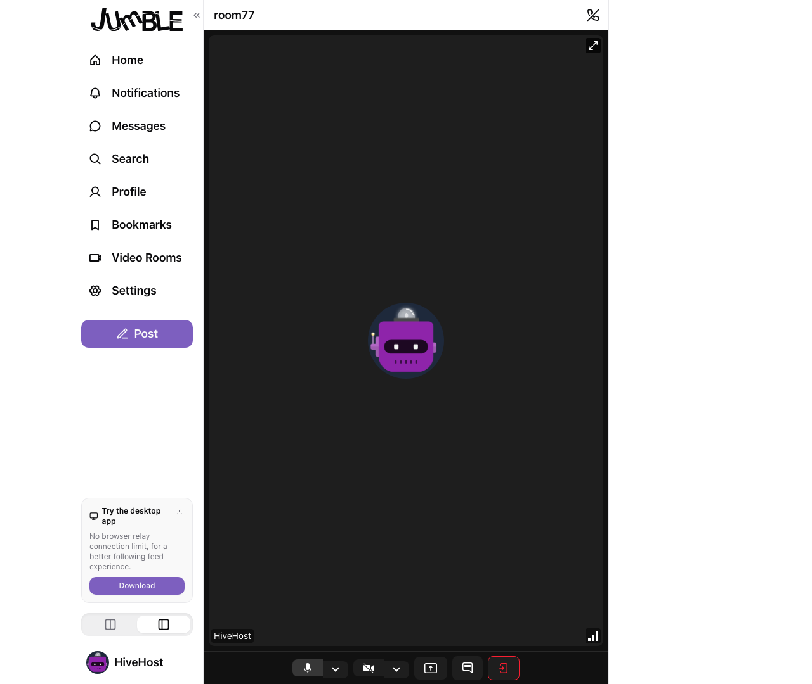
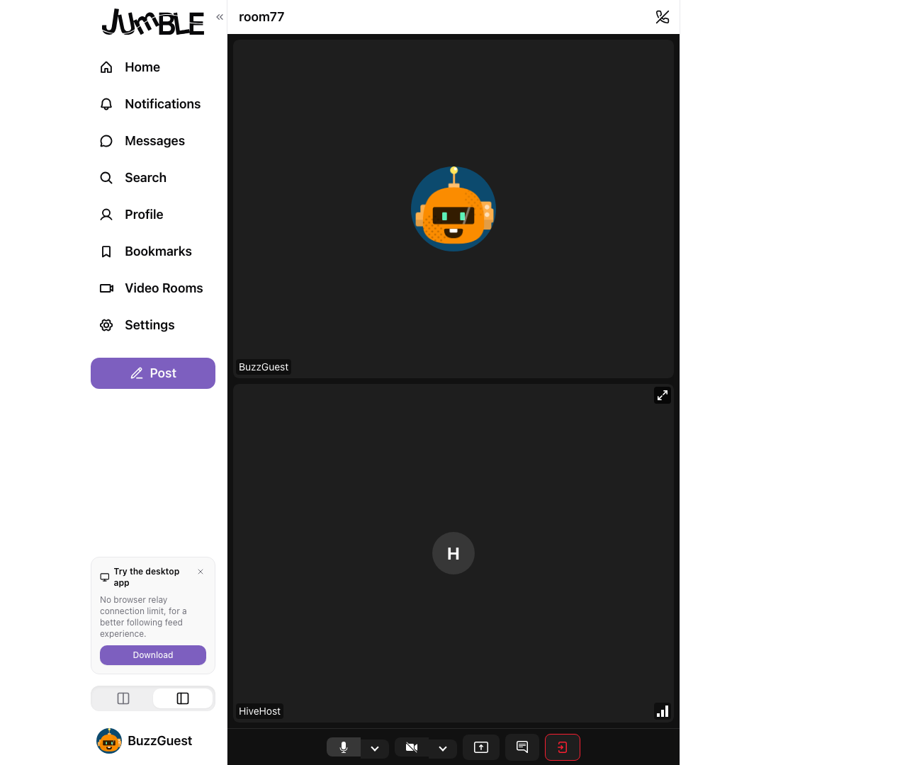

HiveRelay Video Conference — Nostr Avatar Placeholder Test
✓ Test passed (56.3s) — Nostr profile avatars render when camera is off
User 1: HiveHost — DiceBear bot avatar at api.dicebear.com/9.x/bottts/png?seed=HiveHost
User 2: BuzzGuest — DiceBear bot avatar at api.dicebear.com/9.x/bottts/png?seed=BuzzGuest
Both users joined room77 with camera off. The NostrParticipantTile renders the Nostr profile avatar as a placeholder image instead of the default LiveKit SVG icon.
Step 1: User 1 Alone in Room (Camera Off)
User 1 — Alone, camera off
Avatar placeholder shows the HiveHost DiceBear bot image

Step 2: Both Users in Conference (Camera Off)
User 1's View (HiveHost)
Sees both tiles with avatar placeholders. Local tile shows HiveHost avatar img. Remote tile shows "B" fallback (profile fetch in progress).

User 2's View (BuzzGuest)
Sees both tiles with avatar placeholders. Local tile shows BuzzGuest avatar img. Remote tile shows "H" fallback (profile fetch in progress).

Step 3: Final Screenshots
User 1 Final

User 2 Final

How It Works
The NostrParticipantTile component:
- Reads the participant's LiveKit identity (which HiveRelay sets to the Nostr username)
- Looks up the avatar URL from
NostrProfilesContext (keyed by both pubkey and username)
- Renders an
<img> with the avatar URL inside .lk-participant-placeholder
- The LiveKit CSS shows the placeholder (opacity: 1) when
data-lk-video-muted="true"
- Falls back to a letter avatar (first letter of username) if no avatar URL is available
The NostrProfilesSync component populates the context:
- Local user's profile is added immediately from
useNostr().profile
- Remote participants' profiles are fetched from Nostr relays (kind 0 metadata) via
client.fetchProfile()
Previous Test: Camera On (with video)
See the camera-on test results for screenshots with video enabled.